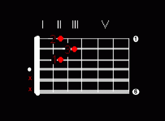
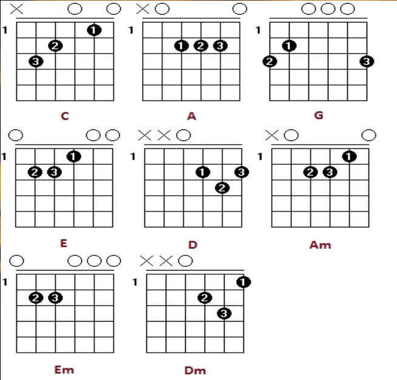

Riječ akord ima 2 osnovna značenja. Prvo je ono iz teorije glazbe, a drugo je ono koje cete vi naučiti. To je simbolički prikaz hvataljke gitare, sa označenim mjestima koje morate pritisnuti prstima lijeve ruke i žicama koje morate trznuti prstima desne ruke. Oznake za polja, prste lijeve i desne ruke, te žice ste već naučili (barem se nadam, a ako niste ponovite).
Postoji mnogo skupina akorda, ali oni osnovni su: durski kvintakordi (oznaka: veliko štampano slovo), molski kvintakordi (oznaka: malo štampano slovo) i dominantni septakrdi (oznaka:veliko ili malo štampano slovo i broj 7). Ostali akordi koji su posebno zastupljeni u zabavnoj glazbi su tzv. nepotpuni akordi, ali sve se može izvesti i bez njih.
Primjer akorda (D-dur) Crvene točkice označavaju mjesto na koje morate staviti prst lijeve ruke (crveni broj označava prst). Bijela točkica označava žicu na koju ne stavljate prst, ali ju treba trznuti (tzv. prazna žica)
Služi za izvođenje težih tonaliteta, koji zahtijevaju da se pritisnu sve žice (žica ima 6, a mi imamo samo 4 prsta s kojim sviramo, stoga koristimo barré).
U početku ćete imati problema sa izvođenjem barré-a. Nikako necete dobivati čisti zvuk, a i prsti ce vas boljeti. To je normalno. Treba samo uporno vježbati, a zvuk će doći sam po sebi.
Bitno je samo da vam ruka bude uvijek opuštena!!! Za izvođenje barré hvata potrebno je potpuno opustiti prste lijeve ruke i ispružiti ih najviše što možete. Kako biste si sve to olakšali prilagodite položaj lijeve ruke. (Proucite pravilno drzanje gitare)
Zapamtite! Nemojte stiskati prejako, jer to ne poboljšava, već otežava izvođenje barré-a.
1 - Kažiprst 2 - Srednji prst 3 - Prstenjak 4 - Mali prst
X - Označava žice koje ne sviramo
O - Označava prazne slike koje okidamo
Analogno radimo za ostale akorde